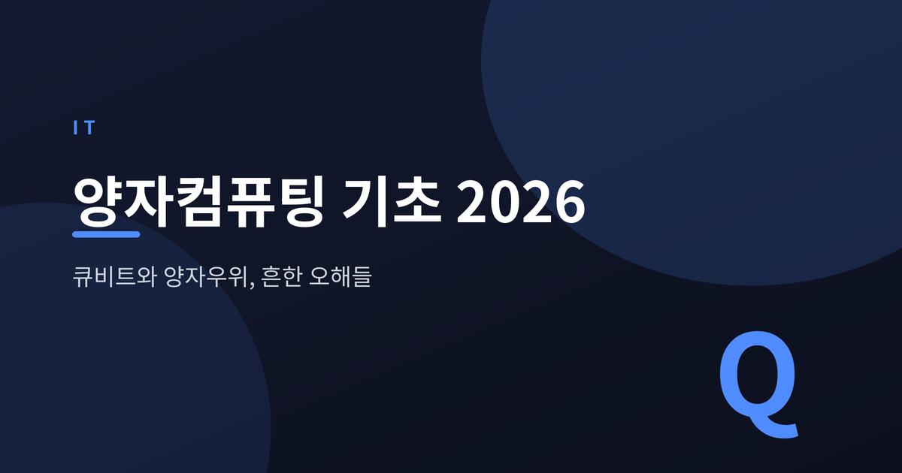
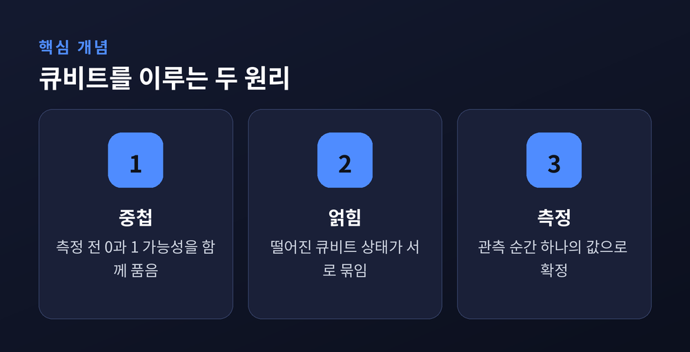
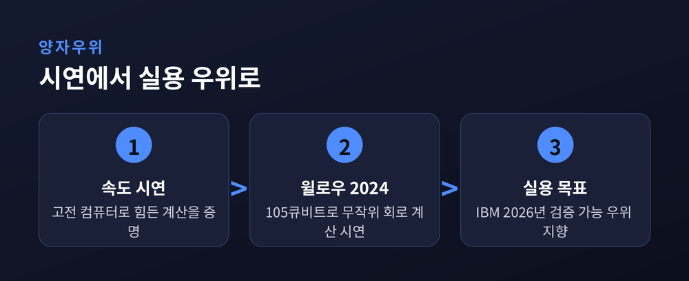
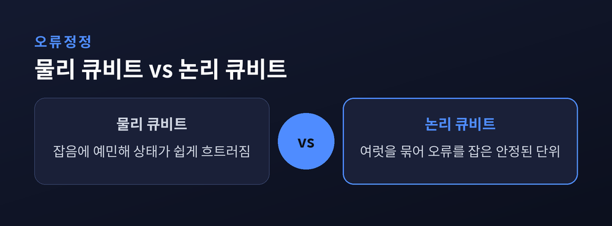

큐비트와 양자우위, 그리고 흔한 오해들

양자컴퓨팅은 뉴스에 자주 오르지만 정작 원리는 안개 속에 있습니다. 이번 글에서는 큐비트부터 양자우위, 오류정정까지 기초 개념을 정리해 보겠습니다. 과장된 기대와 실제 진척을 함께 짚어 균형을 맞추려 합니다.
보통 컴퓨터는 0과 1만 다룹니다. 양자컴퓨터의 기본 단위인 큐비트는 다릅니다. 측정 전까지 0과 1의 가능성을 함께 품습니다. 이 상태를 중첩이라 부릅니다.
여기서 흔한 오해가 생깁니다. "그러니 모든 답을 동시에 계산한다"는 말입니다. 실제는 그렇지 않습니다. 측정하는 순간 큐비트는 하나의 값으로 무너집니다. 관건은 원하는 답이 나올 확률을 키우도록 상태를 설계하는 일입니다.
얽힘은 두 번째 열쇠입니다. 얽힌 큐비트는 서로 떨어져 있어도 상태가 묶여 움직입니다. 이 연결이 특정 문제에서 계산의 지름길을 열어 줍니다.

양자우위는 양자컴퓨터가 고전 컴퓨터로는 사실상 불가능한 계산을 해내는 순간을 뜻합니다. 다만 그 계산이 꼭 쓸모 있어야 한다는 조건은 없었습니다. 초기 시연은 실용성보다 속도 자체를 증명하는 데 가까웠습니다.
2024년 12월, 구글은 105큐비트 칩 윌로우(Willow)를 공개했습니다. 특정 무작위 회로 계산을 5분 만에 끝냈고, 같은 일을 슈퍼컴퓨터가 하면 천문학적 시간이 걸린다고 밝혔습니다.
그러나 이런 시연은 실제 산업 문제와는 거리가 있습니다. IBM은 2026년 안에 검증 가능한 실용적 양자우위를 목표로 잡았습니다. 예전엔 "몇 개의 큐비트인가"를 겨뤘습니다. 지금은 "얼마나 정확한 큐비트인가"로 무게가 옮겨졌습니다.

큐비트는 예민합니다. 미세한 잡음에도 상태가 쉽게 흐트러집니다. 그래서 여러 물리 큐비트를 묶어 하나의 안정된 논리 큐비트를 만드는 오류정정이 핵심 과제입니다.
2024년 윌로우는 의미 있는 진전을 보였습니다. 큐비트를 늘릴수록 오류가 오히려 줄어드는 '문턱 아래' 상태를 처음으로 증명했습니다. 오류정정이 원리대로 작동한다는 신호였습니다.
지금 우리가 선 자리는 NISQ 시대입니다. 잡음이 많고 규모가 중간인 기계라는 뜻입니다. 완전한 오류정정 컴퓨터는 아직 도래하지 않았습니다. IBM은 대규모 내결함성 기계 '스탈링(Starling)'을 2029년 목표로 제시하고 있습니다.

양자컴퓨터를 둘러싼 과장은 적지 않습니다. 세 가지만 짚겠습니다.
첫째, 모든 계산을 빠르게 하지는 않습니다. 강점은 소인수분해나 특정 시뮬레이션 같은 좁은 영역에 있습니다. 둘째, 오늘 당장 모든 암호를 깨지 못합니다. 그럴 규모의 기계는 아직 없습니다. 셋째, 얽힘으로 빛보다 빠른 통신을 하지도 못합니다. 결과 해석에는 여전히 고전 통신이 필요하기 때문입니다.
기술은 실제로 나아가고 있습니다. 다만 상용화는 여전히 좁고 먼 길입니다.
정리하면 이렇습니다. 양자컴퓨팅은 기존 컴퓨터를 대체하는 기술이 아니라, 특정 문제를 다르게 푸는 새로운 방식입니다.
— 큐비트를 얼마나 많이 쌓느냐보다, 얼마나 오래 정확히 붙잡느냐가 관건입니다.
기대와 현실 사이의 거리를 아는 것, 어쩌면 그것이 이 기술을 제대로 읽는 첫걸음일지도 모릅니다.